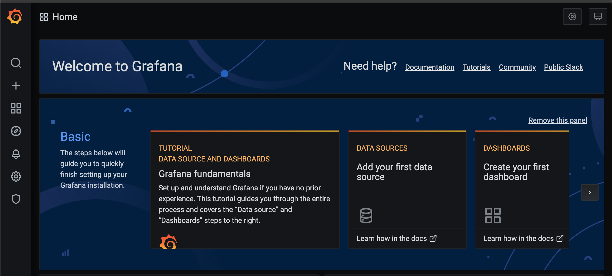
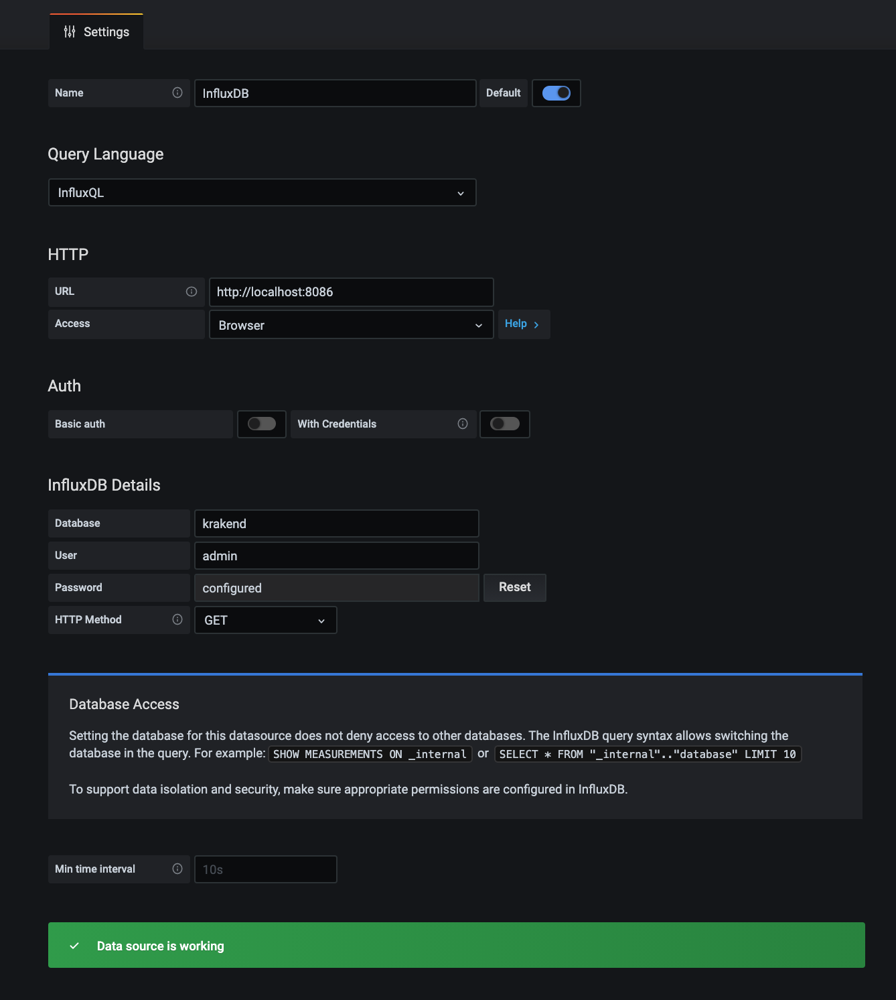
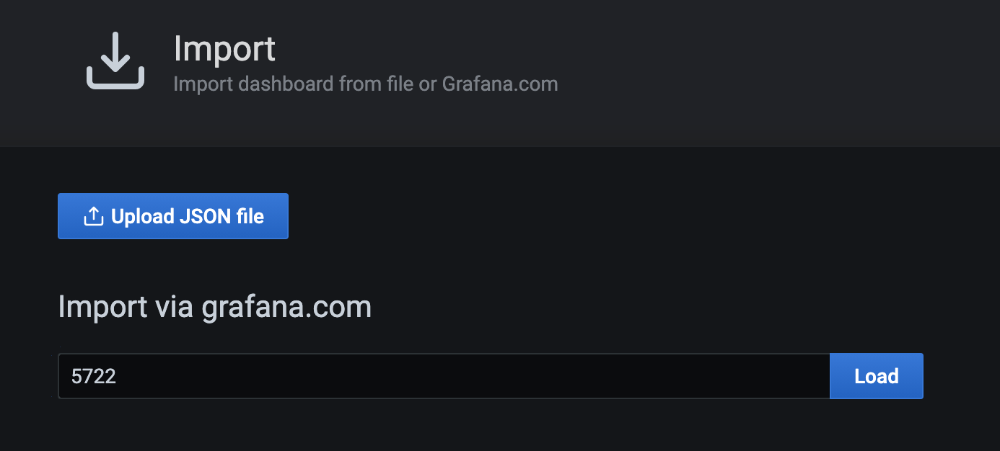
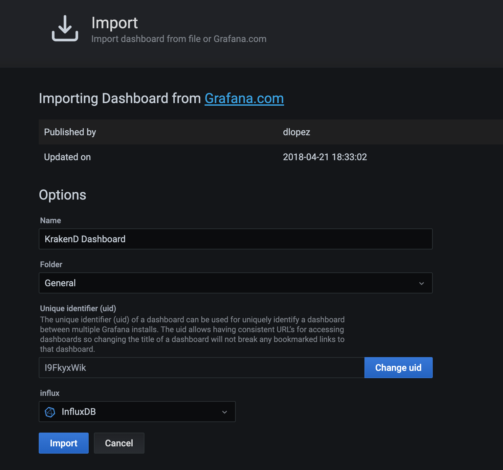
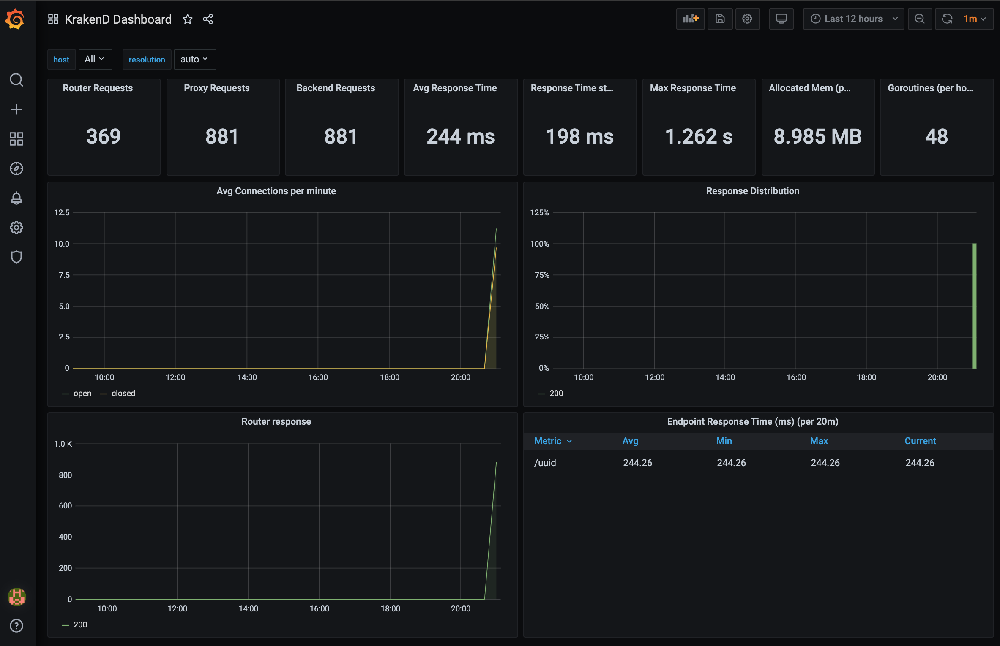

We will show the following topics:
sequenceDiagram
KrakenD ->> InfluxDB: Sending metrics
Grafana -->InfluxDB: Publishing the Payload
Please, execute the following Docker command:
docker run -p 8086:8086 -e INFLUXDB_DB=krakend -e INFLUXDB_USER=letgo -e INFLUXDB_USER_PASSWORD=pas5w0rd -e INFLUXDB_ADMIN_USER=admin -e INFLUXDB_ADMIN_PASSWORD=supersecretpassword -it --name=influx influxdb
This container will expose InfluxDB using the port 8086, and there is a database created called krakend
In order to test InfluxDB, if everything is running, please execute the following cURL comand:
curl -G [http://localhost:8086/query](http://localhost:8086/query) --data-urlencode "q=SHOW DATABASES"
The return should be the the following one:
{"results":[{"statement_id":0,"series":[{"name":"databases","columns":["name"],"values":[["krakend"],["_internal"]]}]}]}
As you can notice, it returns the database krakend, created originally on the first step, which wil be used to store the metrics sent by KrakenD API Gateway.
Please, run the following docker command:
docker run -d -p 3000:3000 --name=grafana grafana/grafana
If you go to the browser and open http://localhost:3000, you will be able to see the Grafana Login Page, you can use admin for both user and password:

From the main home screen, check the box DATASOURCES, and please click on Add your first Data Source. Select the InfluxDB as your time series database, and add the following information: 
Done! Datasource ready to get data from InfluxDB.
Well, you might think: “Now, I have to create the dashboard”, but, the KrakenD Engineering, already let a ready dashboard available for you: https://grafana.com/grafana/dashboards/5722. The most important information at this point is that you “ready dashboard” for krakenD has the ID 5722: 
After to click on Load button, you will see the following screen: 
Please, make sure that you had selected the Influx information, and then click on Import button. At the first look, the dashboard will present no data, obviously because, we haven’t sent any information yet to InfluxDB, so let’s go the last part of this chapter.
We have created the following KrakenD config file named as krakend.json:
{
"version": 2,
"extra_config": {
"github_com/letgoapp/krakend-influx": {
"address": "http://localhost:8086",
"ttl": "10s",
"buffer_size": 0
},
"github_com/devopsfaith/krakend-metrics": {
"collection_time": "10s",
"listen_address": "127.0.0.1:8090"
}
},
"timeout": "3000ms",
"cache_ttl": "300s",
"output_encoding": "no-op",
"name": "GrafanaAPIs",
"endpoints": [{
"endpoint": "/uuid",
"method": "GET",
"output_encoding": "no-op",
"extra_config": {},
"backend": [{
"url_pattern": "/uuid",
"encoding": "no-op",
"sd": "static",
"method": "GET",
"extra_config": {},
"host": [
"https://httpbin.org"
],
"disable_host_sanitize": false
}]
}]
}
This krakend.json config file has the whole configuration in order to send the metrics to InfluxDB, here are these particular configs:
"extra_config": {
"github_com/letgoapp/krakend-influx": {
"address": "http://localhost:8086",
"ttl": "10s",
"buffer_size": 0
},
"github_com/devopsfaith/krakend-metrics": {
"collection_time": "10s",
"listen_address": "127.0.0.1:8090"
}
},
Please, chose your preferred way to execute krakend, it might be several ones, in our case, we do have the installed binary, so we will run the command: krakend run -c krakend.json
The log will show that InfluxDB is activated:
2020/11/19 20:58:21 DEBUG: http-server-handler: no extra config
2020/11/19 20:58:21 DEBUG: influx ping results: duration = 32.216439ms msg = 1.8.3
2020/11/19 20:58:31 DEBUG: Preparing influxdb points
2020/11/19 20:58:31 DEBUG: no metrics to send to influx
2020/11/19 20:58:41 DEBUG: Preparing influxdb points
2020/11/19 20:58:41 INFO: 16 datapoints sent to Influx
We love this tool: Hey(https://github.com/rakyll/hey), which is a pretty easy HTTP Load testing tool.
We will execute 1200 requests now, and check how KrakenD will process this volume:
hey -n 1200 http://localhost:8080/uuid
Here the results:
Latency distribution:
10% in 0.1441 secs
25% in 0.1465 secs
50% in 0.1500 secs
75% in 0.1534 secs
90% in 0.1629 secs
95% in 0.5674 secs
99% in 0.6986 secs
Details (average, fastest, slowest):
DNS+dialup: 0.0003 secs, 0.1389 secs, 1.2797 secs
DNS-lookup: 0.0001 secs, 0.0000 secs, 0.0036 secs
req write: 0.0000 secs, 0.0000 secs, 0.0013 secs
resp wait: 0.1846 secs, 0.1389 secs, 1.2682 secs
resp read: 0.0001 secs, 0.0000 secs, 0.0024 secs
Status code distribution:
[200] 1200 responses
Please, check the KrakenD log, and then take a look into Grafana Dashboard again:

Have fun with! And if you need some help, please reach us at: https://skalena.com.br